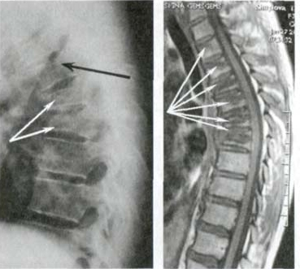
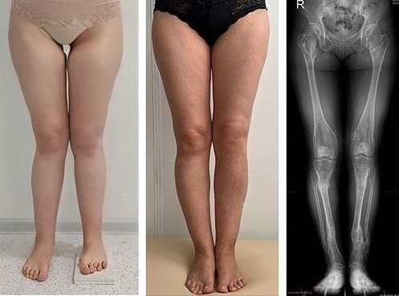
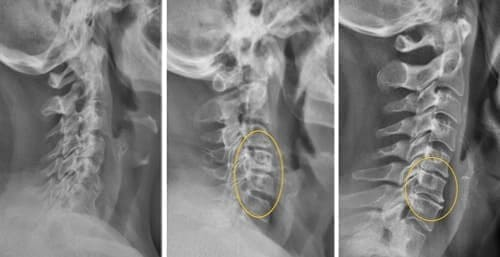

Debrecenben él egy ember, aki mindent felülír, amit az öregedésről tudunk. 103 évesen Bakos István professzor minden reggel végigsétál a Nagyerdő ösvényein, segítség nélkül járja a lépcsőket, és életében egyetlen napot sem feküdt kórházban. Nemzedéktársai már régen elmentek vagy ágyhoz kötöttek — ő pedig a mai napig dolgozik.
Tavaly még Bakos professzor betegeket fogadott a Debreceni Klinikák Infektológiai Osztályán. Több mint 70 év gyakorlat, több mint 40 000 beteg, több ezer olyan ember, akit más orvosok már feladtak. Hathónapos várólistája volt — az ország minden tájáról érkeztek hozzá.
De az igazi rejtély nem a betegeinél van. Az igazi rejtély ő maga. 103 évesen — egyetlen parazita sem, semmilyen krónikus gyulladás, egyetlen beteg szerv sem. A vér- és székletvizsgálatai úgy néznek ki, mint egy 45 éves férfié. Az orvosok, akik megvizsgálják, egyszerűen nem hisznek a saját szemüknek.
Évtizedeken át titokban tartotta a módszerét — kizárólag a saját betegeinél alkalmazta, és soha nem tette közzé. De ma, amikor az egészsége már nem engedi, hogy személyesen fogadja a betegeket, a professzor olyan döntést hozott, amely mindent megváltoztatott: a formuláját minden magyar ember számára elérhetővé tette.

Bakos István professzor: „Egész életemben azt figyeltem, hogyan betegszenek meg az emberek idő előtt — nem azért, mert a testük gyenge, hanem mert senki nem mondta meg nekik, ki az igazi ellenség, amely a saját belükben rejtőzik. 103 évesen élő bizonyítéka vagyok annak, hogy a szervezet tiszta és egészséges maradhat mély öregkorig, ha tudjuk, hogyan indítsuk be azokat a mechanizmusokat, amelyek kitakarítják belőle a parazitákat.
A CÉLOM MINDIG EGY VOLT — SEGÍTENI A SZERVEZETNEK, HOGY MAGA ŰZZE KI A PARAZITÁKAT ÉS A MÉREGANYAGOKAT, PONTOSAN ÚGY, MINT FIATALKORBAN. MOST A FIAM, GÁBOR, MINDEZT EGY TERMÉKKÉ ALAKÍTOTTA, AMELY ELJUTHAT MAGYARORSZÁG MINDEN OTTHONÁBA."
Dr. Bakos Gábor — a professzor fia — a budapesti Semmelweis Egyetemen végzett kitüntetéssel, és infektológiából és parazitológiából szerzett szakképesítést. Éveken át tanulmányozta apja módszerét, laboratóriumi vizsgálatokat végzett, és nemzetközi kutatócsoportokkal dolgozott azon, hogy Bakos professzor évtizedes tapasztalatát korszerű és mindenki számára elérhető termékké alakítsa.
Az együttműködés eredménye minden várakozást felülmúlt. De mielőtt a termékről mesélnék, nézzük meg, miért téves szinte minden, amit a parazitákról gondolunk.
A hazugság, amelyben egész Magyarország hisz:
„A féreghajtó tabletta megoldja" — TÉVEDÉS, csak elrejti a bajt, és közben szétroncsolja a beleket!
Bakos István professzor:
— Hetven éve gyógyítok embereket, és elmondok valamit, amit a gyógyszertárak soha nem fognak elismerni: a gyógyszertári féreghajtók egyike sem tisztított meg teljesen egyetlen szervezetet sem. Egyetlen egy sem! Leütik a felnőtt paraziták egy részét, de a peték és a lárvák a helyükön maradnak — csakhogy Ön ettől kezdve már nem is gyanakszik. Amikor pedig újra jelentkeznek, már késő lesz.
De ez még nem a legrosszabb. A legrosszabb az, amit ezek a vegyi anyagok a belső szerveivel művelnek. 70 évnyi munka alatt több száz beteget láttam, akinek a mája és a veséje teljesen tönkrement — nem a betegségtől, hanem a gyógyszerektől! A szervezet nem arra való, hogy évtizedeken át vegyszert nyeljen. És mégis pontosan ezt „írja fel" a hagyományos orvoslás.
Különösen veszélyesek azok a paraziták, amelyek elhagyják a beleket. A máj, az epeutak és az izomszövet nem küld fájdalomjelzést — ezért a károsodás csendben zajlik, néha évekig. Amikor a panaszok végre megjelennek, a baj már előrehaladott. A kezeletlen parazitafertőzés rémálommá változtatja az életet: enyhe fáradtsággal és puffadással kezdődik, és teljes kimerültséggel, összeomlott immunrendszerrel végződik.
Nézze meg, mit mutat ez a lelet. Egy nő, alig 39 éves, tanárnő — a bélrendszere viszont olyan állapotban van, amilyet 20 évvel ezelőtt csak egy 70 éves betegnél láttam volna. Napi 8 óra ülés, kapkodva bekapott ételek, és az, hogy fogalmunk sincs, mi zajlik a saját szervezetünkben — ezt hozza a mai életmód.

Ha 40 éves kora felett tartós fáradtságot, puffadást vagy megmagyarázhatatlan bőrkiütéseket tapasztal — a szervezete nagy valószínűséggel már parazitáknak ad otthont. Ez nem „a fáradtságtól" van, és nem „normális".
A májban és az epeutakban a folyamat többszörösen gyorsabb és alattomosabb — a panaszok csak akkor jelentkeznek, amikor a károsodás már kritikus!
Bakos István professzor:
— Teljesen őszinte akarok lenni. Ismertem embereket, akik hónapokig halogattak. Az eredmény? A paraziták a belekből átterjedtek a májra, és ott maradandó kárt okoztak. A bélrendszert később is ki lehet tisztítani, de a leromlott májat helyreállítani már sokkal nehezebb — A PARAZITÁK KITAKARÍTHATÓK, DE A TÖNKREMENT SZERV NEM MINDIG! És mi marad utána? KRÓNIKUS BETEGSÉG, ÁLLANDÓ KIMERÜLTSÉG ÉS ÉLETHOSSZIG TARTÓ GYÓGYSZERSZEDÉS!
És mit kínál a mai orvoslás? Drága és agresszív vegyi készítményeket. Személyesen több száz beteget láttam, aki az erős féreghajtó kúra után ROSSZABBUL érezte magát, mint előtte. TÖNKRETETT BÉLFLÓRA, TÚLTERHELT MÁJ, KRÓNIKUS GYENGESÉG, ÉS VÉGÜL — ÚJRAFERTŐZŐDÉS. NÉHA PEDIG — VISSZAFORDÍTHATATLAN KÁROSODÁS!
 Bakos professzor egy beteg leletét mutatja, aki hónapokig szedett vegyi készítményeket: „Ez a tipikus eredmény — a paraziták túlélték, a bélflóra tönkrement, a beteg állapota pedig rosszabb, mint a kezelés előtt volt. Több száz hasonló esetet láttam."
Bakos professzor egy beteg leletét mutatja, aki hónapokig szedett vegyi készítményeket: „Ez a tipikus eredmény — a paraziták túlélték, a bélflóra tönkrement, a beteg állapota pedig rosszabb, mint a kezelés előtt volt. Több száz hasonló esetet láttam."
A statisztika kíméletlen: azoknál, akik csak a gyógyszertári tablettákra hagyatkoztak, 60%-ban 2–4 éven belül visszatér a fertőzés. És mibe kerül? Hónapokig tartó rossz közérzet, több százezer forint és teljes bizonytalanság. Sokan elismerik: ha visszaforgathatnák az időt, soha nem bíznák magukat pusztán a vegyszerre.
Ezek a tünetek azt jelentik, hogy a szervezetében már paraziták élnek! És ha elmúlt 40–50 éves — beavatkozás nélkül a folyamat csak gyorsul!
— 70 év alatt több mint 40 000 embert vizsgáltam meg, és a következőt mondhatom: minden figyelmen kívül hagyott parazitafertőzés egy lépés a súlyos krónikus betegség felé. — csak ebben az évben Magyarországon több mint 62 000 új, súlyos parazitafertőzéses esetet vettek nyilvántartásba — ebből 11 500-at a 38 és 48 év közötti korosztályban. Ez nem a higiénia kérdése. Ez a tétlenség kérdése.
Ha a szervezete már adott ilyen jelzést — ne várjon egyetlen napot sem!
Íme a lista, amelyet minden betegemnek felolvastam az első vizsgálaton:
- Reggel is fáradtan ébred, az alvás nem pihenteti meg;
- Haspuffadás, gázok és korgás étkezés után;
- Hirtelen éhségrohamok, erős vágy az édesség és a tésztafélék iránt;
- Sötét karikák és táskák a szem alatt;
- Bőrkiütések, ekcéma, pattanások vagy megmagyarázhatatlan viszketés;
- „A semmiből" jött allergiák és ételérzékenységek;
- Éjszakai fogcsikorgatás és nyugtalan alvás;
- Váltakozó székrekedés és hasmenés;
- Ingerlékenység, idegesség és „köd" a fejben;
- Gyakori megfázás és legyengült immunrendszer;
- Indokolatlan fogyás vagy hízás;
Ha akár csak kettőt is felismer ezek közül — a szervezetében szinte biztosan ott vannak a paraziták. A májban és az epeutakban pedig három-négyszer gyorsabban zajlik a folyamat, mert oda a szervezet nem tud fájdalomjelzést küldeni. AZ EREDMÉNY: KRÓNIKUS GYULLADÁS, TÖNKREMENT BÉLNYÁLKAHÁRTYA, TÚLTERHELT MÁJ, ÖSSZEOMLOTT IMMUNRENDSZER — ÉS MINDEZ AKÁR HETEK ALATT KIALAKULHAT! Ne halogassa, mert a szervezet nem ad végtelen esélyt!
Nézze meg ezeket az embereket lent. Mindegyiküknek ugyanazok a tünetei voltak, amelyeket Ön is érez ebben a pillanatban. Mindegyikük azt mondta: „majd elmúlik". És mindegyikük ma bármit megadna azért, hogy visszaforgassa az időt, és akkor lépjen, amikor még volt rá esélye.


Bakos István professzor:
103 éves vagyok, és saját tapasztalatból mondhatom: a szervezet BÁRMILYEN életkorban képes megtisztítani önmagát — feltéve, hogy tudjuk, HOGYAN kell beindítani. Pontosan ennek szenteltem az életemet. ÉS HA MÁR ELMÚLT 50–60 ÉVES, NE VÁRJON EGYETLEN MÁSODPERCET SEM! Önnél a fertőzés szinte biztosan elérte a kritikus szakaszt — sürgősen meg kell állítani, és be kell indítani a bélrendszer, a máj és az egész szervezet megtisztulását!
Esetek, amelyeket más orvosok reménytelennek nyilvánítottak! Kerekes Julianna 86 évesen újra egyedül jár a boltba, miután három kórház elutasította. Íme a története…
A nyíregyházi Kerekes Julianna súlyos kimerültségtől, állandó puffadástól és az egész testén megjelenő kiütésektől szenvedett. Három különböző kórház utasította el — mindenhol ugyanazt mondták: „Ebben a korban már nem lehet tenni semmit." A lánya véletlenül hallott Bakos professzorról debreceni ismerősöktől, és úgy döntött, felkeresi.

„Úgy éltem, mint egy börtönben — a saját házam lett a cellám. Nem tudtam kimenni a konyhába, egy percnél tovább nem bírtam állni, még egy teát sem tudtam megfőzni magamnak. A gyerekeim dolgoztak, nem tudtak minden nap jönni. Feküdtem és a plafont néztem. Az orvosok azt mondták, ebben a korban ez már természetes, és csak vitaminokat adtak.
Amikor a lányom elvitt Bakos professzorhoz, rám nézett, és mondott valamit, amit egyetlen orvos sem mondott nekem: ‚Julianna asszony, a szervezete NEM adta fel a harcot. Csak eddig senki nem segített neki.’ Megkaptam a kezelést, és azt mondta, legyek türelmes. A harmadik héten ELŐSZÖR MÁSFÉL ÉV UTÁN EGYEDÜL KELTEM FEL AZ ÁGYBÓL!
Ma, öt hónappal később, járok a boltba, főzök, sőt a ház előtti kiskertet is gondozom. 86 évesen! Amikor a szomszédok megláttak az udvaron, nem hittek a szemüknek. Azt hitték, többé nem látnak. Bakos professzor visszaadta az életemet — és nincsenek szavaim, amelyekkel megköszönhetném."
Kerekes Julianna, 86 éves, NyíregyházaEgy másik rendkívüli eset Tóth Lászlóé — egy 47 éves győri építőmunkásé, aki 20 év nehéz fizikai munka és „menet közben" evés után súlyos parazitafertőzést és bélgyulladást kapott, és hónapokig nem tudott dolgozni.
László kipróbálta Bakos professzor módszerét, és az eredmény még a kezelőorvosát is megdöbbentette. A BÉLRENDSZERE HELYREÁLLT, A FÁJDALOM ÉS A PUFFADÁS TELJESEN ELTŰNT, A LEGHIHETETLENEBB PEDIG — MINDÖSSZE 4 HÉT UTÁN VISSZATÉRT A MUNKÁBA!
László elmesélte nekünk:
 „Húsz éven át építkezéseken dolgoztam, de arra, hogy mit eszem, soha nem figyeltem. Egyik reggel heves hasi fájdalomra ébredtem, és nem tudtam felkelni. A feleségem mentőt hívott. A diagnózis — kiterjedt parazitafertőzés és bélgyulladás. Az orvosok 1,8 millió forintos kivizsgálást és kúrát javasoltak, garancia nélkül.
„Húsz éven át építkezéseken dolgoztam, de arra, hogy mit eszem, soha nem figyeltem. Egyik reggel heves hasi fájdalomra ébredtem, és nem tudtam felkelni. A feleségem mentőt hívott. A diagnózis — kiterjedt parazitafertőzés és bélgyulladás. Az orvosok 1,8 millió forintos kivizsgálást és kúrát javasoltak, garancia nélkül.
Hónapokig feküdtem otthon erőtlenül. A gyerekeim szomorúan néztek rám, a feleségem minden este sírt. Tehernek éreztem magam. El akartam tűnni…
Aztán az apósom hallott Bakos professzorról az egyik korábbi betegétől. Felhívtam, elküldtem a leleteket, és a professzor azt mondta: „Nem késő." Ez a két szó több reményt adott, mint mindaz, amit tíz orvostól hallottam.
A negyedik napon már normálisan ettem. A teljes kúra 80 napig tartott. Ma megint dolgozom — nem az építkezésen, hanem az irodában, de TELJES ERŐVEL. Futok a gyerekekkel a parkban. Élek. A leletek szerint a szervezetem 90 százalékban tiszta. Bakos professzor az egyetlen orvos, aki nem utasított el — és az egyetlen, aki meggyógyított."
Bakos professzor betegeinek ezrei ugyanilyen történeteket mesélnek: emberek, akiknek más orvosok azt mondták „szokjon hozzá", újra rendesen ettek, újra dolgoztak, újra éltek. Hogyan lehetséges ez?
A formula, amelyet Bakos professzor több mint 40 éven át alkalmazott a betegeinél! Az „Endogén Parazitamentesítés" módszer titka — hogyan kezdi a szervezet maga kiűzni a parazitákat és helyreállítani a bélrendszert!
Bakos István professzor:
— Engedje meg, hogy elmagyarázzak valamit, amit a hagyományos orvoslás nem akar elismerni. Minden ember szervezetében — még egy 90 évesében is — ott vannak azok a védekező mechanizmusok, amelyek fiatalkorban könnyedén kitakarítottak minden parazitát és méreganyagot. Az évek során ezek nem halnak el — egyszerűen „elalszanak", mert a szervezet nem kapja meg hozzájuk a megfelelő jelzéseket.
Negyven évvel ezelőtt fedeztem fel, hogy természetes hatóanyagok egy bizonyos kombinációja — szigorúan meghatározott arányban — „gyújtókulcsként" működik ezekhez az alvó mechanizmusokhoz. A módszert így neveztem el: „Endogén Parazitamentesítés" — mert semmi mesterségeset nem visz be, hanem a szervezet saját erőforrásait aktiválja. Pontosan ezért NINCSENEK nálam mellékhatások, NINCS szervkárosodás és NINCS hozzászokás.
Négy évtizeden át minden betegemnél ezt a módszert alkalmaztam — és mindegyiküknél ugyanazt az eredményt láttam: a fertőzés megállítását, a méreganyagok kiürülését és az erő fokozatos visszatérését. Több száz beteg, akit „utolsó esélyként" küldtek hozzám, a saját lábán ment ki a rendelőmből.
Maga a formula nem bonyolult — de a pontosság mindent eldönt. Minden összetevőnek pontos mennyiségben kell jelen lennie, milligramm századrészére. Ha az arányok nem stimmelnek, a hatás egyszerűen elmarad. Pontosan ezért alkalmaztam évtizedeken át személyesen a módszert — mert nem bízhattam a gyógyszertárakra.
A kapszulák összetétele Bakos professzor formulája szerint (hatóanyagok napi adagonként):
- Artemizinin egynyári üröm (Artemisia annua) kivonat: 3800 mg
- Kukurbitin tökmag (Cucurbita pepo) kivonat: 4500 mg
- Juglon fekete dió (Juglans nigra) zöld héj kivonat: 2400 mg
- Eugenol szegfűszeg (Syzygium aromaticum) kivonat: 1200 mg
- Berberin borbolya (Berberis vulgaris) kivonat: 1100 mg
- Illóolaj gilisztaűző varádics (Tanacetum vulgare) kivonat: 600 mg
- Papain papaya (Carica papaya) 100 000 U/g: 400 mg
Ezek az összetevők egyszerűnek tűnnek, de megfelelő minőségben és megfelelő forrásból beszerezni őket rendkívül nehéz. A többségük nincs a gyógyszertárakban, és a világ különböző pontjairól kell hozatni. Otthon összekeverni pedig gyakorlatilag lehetetlen — mert az adagolásnak 0,1 mg pontosságúnak kell lennie.
Pontosan ezért készítettem évtizedeken át személyesen a keveréket, minden betegnek külön. De a fiam, Gábor, meglátta az egész képet.
Hogyan alakította dr. Bakos Gábor apja 40 éves módszerét mindenki számára elérhető kapszulává — Ultraxal
Dr. Bakos Gábor:
— Apám rendelőjében nőttem fel. Minden nap láttam, hogyan lépnek be az emberek kimerülten és betegen — és hogyan távoznak mosolyogva. 14 évesen már fejből tudtam a receptúrát. De csak akkor értettem meg, mennyire egyedülálló, amit apám létrehozott, amikor elvégeztem a Semmelweis Egyetemet, és nemzetközi kutatócsoportokkal kezdtem dolgozni.
Öt évet töltöttem budapesti és müncheni laboratóriumokban, hogy megértsem, MIÉRT működik apám formulája ilyen jól. A válasz megdöbbentett: ezeknek a hatóanyagoknak a pontos arányú kombinációja megbénítja a parazitákat, lebontja a petéiket és lárváikat, és közben megköti az általuk kibocsátott méreganyagokat. Más szóval: a szervezet szó szerint „visszaemlékszik" arra, hogyan kell megtisztítania magát — csak a megfelelő jelzésre van szüksége.
Kidolgoztunk egy eljárást, amelyet így neveztünk el: „Nanodiffúziós technológia fokozott biohasznosulással" — olyan módszer, amelynél a hatóanyagokat különleges nanorészecskékbe zárjuk, amelyek sértetlenül jutnak át a gyomron, és a bélfalon, illetve a véráramon keresztül közvetlenül eljutnak oda, ahol a paraziták megtelepedtek. Ez mintegy 380%-kal növeli a felszívódást a hagyományos étrend-kiegészítőkhöz képest. A terméket így neveztem el: Ultraxal — szájon át szedhető kapszula, amely pontosan ott hat, ahol szükséges. Apám és a 40 éves munkája tiszteletére adtam neki ezt a nevet.

Az Ultraxal kapszula apám eredeti formulájának mind a 7 összetevőjét tartalmazza, plusz 29 további kivonatot és vitamint, amelyeket a müncheni laboratóriumi kutatások során találtunk. Az eredmény olyan kapszula, amely UGYANOLYAN JÓL működik, mint a személyes kezelés Bakos professzornál — de eljuttatható Magyarország minden otthonába. Naponta kétszer kell bevenni, a hatóanyagok pedig eljutnak a bélrendszerbe és a véráramba, oda, ahol a paraziták rejtőznek.
„Az Ultraxal apám öröksége — a 40 évnyi tapasztalata, egyetlen formulába zárva. Minden összetevő azzal a pontossággal van kiválasztva, amellyel ő minden egyes beteghez odafordult. Ez nem tömeggyártott gyógyszertári termék — ez egy egész élet munkája, amelyet a gyógyításnak szentelt."
A leghihetetlenebb az Ultraxalban az, hogy nem csupán enyhíti a tüneteket — hanem beindítja azt a takarító mechanizmust, amely az évek során elaludt. A kapszulát szájon át veszi be, a nanorészecskék pedig mélyen a bélfalba és a véráramba juttatják a hatóanyagokat — oda, ahová a szokásos tabletták soha nem jutnak el. Az összetevők közötti szinergia akár hússzorosára erősíti a hatást ahhoz képest, mintha külön-külön szednénk őket.
Az Ultraxal négy szakasza — mi történik a szervezetében lépésről lépésre
Bakos István professzor:
— Orvosi pályám egésze alatt azt figyeltem, hogy a betegeim ugyanazon a négy szakaszon mennek keresztül. A fiam ezeket tudományosan dokumentálta, és beépítette az Ultraxalba, hogy bárki otthon végigjárhassa őket.
Az „Endogén Parazitamentesítés" 4 szakasza:
- 1. szakasz — A paraziták megbénítása és a gyulladás leállítása: Már az első kapszulától a nanorészecskék a bélfalon és a véráramon át közvetlenül a fertőzött szövetekbe juttatják a hatóanyagokat. A paraziták elveszítik a képességüket arra, hogy táplálkozzanak és megkapaszkodjanak a bélfalban. A puffadás és a nehézségérzés 24–48 órán belül érezhetően csökken — a máj és a vese túlterhelése nélkül, mert a kapszula célzott felszívódási technológiát használ.
- 2. szakasz — Kiürítés és méregtelenítés: A 3. és a 7. nap között a megbénított paraziták, peték és lárvák természetes úton távoznak a szervezetből. Az általuk évekig kibocsátott méreganyagok megkötődnek és kiürülnek. A puffadás és a gázosodás csökken, a hasi nehézség megszűnik.
- 3. szakasz — A bélnyálkahártya helyreállítása: Ez a módszer szíve. A megrongálódott bélnyálkahártya sejtjei megkapják a biokémiai jelzést, és elkezdenek megújulni, az egészséges bélflóra pedig visszatelepül. A tápanyagok felszívódása rendeződik, és visszatér az energia. Pontosan ez a szakasz teszi az Ultraxalt egyedülállóvá — egyetlen más termék sem indítja be ezt a mechanizmust.
- 4. szakasz — Tartós védőgát: 30–60 nap után a megújult bélnyálkahártya és az egészséges flóra olyan közeget hoz létre, amelyben a paraziták többé nem tudnak megtelepedni. Bakos professzor ezt „parazitaimmunitásnak" nevezi — ha egyszer kialakult, a hatás évekig kitart.
Mind a négy szakasz 40 év klinikai tapasztalatának és 5 év laboratóriumi kutatásnak az eredménye. Az Ultraxal nem a tünetek gyors „elfedését" kínálja — hanem mély, biológiai tisztulási folyamatot indít el, amely évtizedekkel korábbi állapotába hozza vissza a szervezetet.
Klinikai eredmények, amelyek megdöbbentették az orvostársadalmat — 2 340 beteg, 38 és 89 év között
Dr. Bakos Gábor:
— Amikor közzétettük az első laboratóriumi eredményeket, a reakció villámgyors volt. Budapesti, berlini és bécsi egyetemi klinikák kérték, hogy saját vizsgálatokat végezhessenek. A valódi betegeknél elért eredmények még a mi várakozásainkat is felülmúlták — a létező kezelési módszerek egyike sem közelíti meg ezeket a mutatókat.
Betegek, akik évek óta eredménytelenül szedtek tablettát, teljesen megtisztultak. Emberek, akik hónapok óta nem keltek fel az ágyból, újra dolgozni kezdtek. A kontrollcsoportok orvosai nem hittek a saját leleteiknek.
Az „Ultraxal" klinikai vizsgálatainak eredményei 2 340 betegnél, 38 és 89 év között
| A felnőtt paraziták és lárváik teljes kiürülése | 100% |
| A krónikus fáradtság és kimerültség megszűnése | 94,7% |
| Puffadás, gázok, emésztési panaszok | 96,3% |
| A máj és az epeutak megtisztulása | 97,8% |
| Bőrkiütések, ekcéma, viszketés | 98,1% |
| A károsodott bélnyálkahártya helyreállítása | 87,2% |
| A testsúly normalizálódása | 93,6% |
| Nyugtalan alvás, éjszakai fogcsikorgatás | 95,4% |
| Visszatérő allergiák és gyakori megfázások | 91,8% |
| Laboratóriumilag igazolt parazitamentesség | 98,3% |
Pontos határidők az „Ultraxal" kúrához:
Más európai kutatócsoportok is megpróbálják reprodukálni a formulánkat, de az eddigi eredményeik messze elmaradnak a mieinktől. A dr. Bakos Gábor által kifejlesztett nanodiffúziós technológia egyelőre nem másolható — éppen ez teszi lehetővé, hogy a kapszula a hatóanyagokat a bélfalon és a véráramon át juttassa el a parazitákhoz, ahelyett hogy azok egyszerűen áthaladnának az emésztőrendszeren.
Mennyi ideig tart a teljes megtisztulás? Bakos professzor 70 év tapasztalata alapján magyarázza el
Bakos István professzor:
— A minimális kúra, amelyet ajánlok, 30 nap. Súlyosabb fertőzésnél — 60, néha 90 nap. De az egész pályám alatt NEM VOLT EGYETLEN ESET SEM, amikor a módszer ne hozott volna eredményt. Egyetlen sem. És gyógyítottam 85, 90, sőt 94 éves embereket is.
Az Ultraxal nem csupán a tüneteket csillapítja — mély biológiai tisztulási folyamatot indít el. Vegye be naponta kétszer, és már az első órákban könnyebbséget fog érezni. Egy héten belül észreveszi, hogy megszűnt a puffadás. A teljes kúra után pedig a szervezete olyan állapotban lesz, mint 20–30 évvel ezelőtt. De a legértékesebb valami más: a hatás TARTÓS. Ha a bélrendszer egyszer rendbe jött, évekig maga védekezik az újrafertőződés ellen!
Az „Ultraxal" segítségével több mint 19 000 magyar ember szabadult meg a parazitáktól. Íme csak egy kis rész Bakos professzor betegei közül:



Bakos István professzor:
— Ezek a fényképek nem csodák — ez tudomány. Mindegyik ember visszakapott valamit, amiről más orvosok azt mondták, hogy lehetetlen: tiszta szervezetet és betegség nélküli életet. Az Ultraxal AZ EGÉSZ ORVOSI ÉLETEM KORONÁJA — ÉS AZ ÖRÖKSÉGEM A JÖVŐ NEMZEDÉKEINEK!
Miért nem fogad már Bakos professzor betegeket — és hogyan lett az Ultraxal az egyetlen mód, hogy hozzájussunk a módszeréhez „Az egészségem már nem engedi, hogy személyesen fogadjam a betegeket. De a formulám tovább fog gyógyítani — a fiam kezei által."
Bakos István professzor:
— Tavaly hoztam meg életem legnehezebb döntését: hogy nem fogadok többé betegeket. A várólistán több mint 2 000 név volt — és nem hagyhattam őket segítség nélkül. Ezért kértem meg a fiamat, Gábort, hogy alakítsa a formulát mindenki számára elérhető termékké. Most nyugodt vagyok — az Ultraxal pontosan az, amit a betegeimnek adtam, csak kényelmes formában. A formula biztos kezekben van.
Dr. Bakos Gábor: — Az Ultraxal nem kapható gyógyszertárban — a gyártási folyamat összetett, a mennyiség pedig korlátozott. Csak az online programon keresztül érhető el, évente kétszer. A programon belül azonban a kedvezmény eléri az 50%-ot — mert a célunk nem a haszon, hanem az elérhetőség. Különösen a nyugdíjasok számára, akikről apám ragaszkodott hozzá, hogy a legnagyobb kedvezményt kapják.
A jelentkezéshez használja az alábbi hivatalos megrendelőlapot — ez közvetlenül dr. Bakos Gábor gyártócsapatához fut be.
Ne hagyja ki az idei utolsó lehetőséget — az Ultraxal elfogyhat a program vége előtt!

Dr. Bakos Gábor:
— Idén 5 000 doboz Ultraxal kapszulát sikerült legyártanunk kifejezetten a magyarországi betegek számára. De a kereslet — amely óriási — miatt ez a mennyiség gyorsan elfogy. A következő adag legkorábban 2026 végére készül el.
A támogatási program a következő dátumig aktív: — eddig minden 40 év feletti magyarországi lakos akár 50% kedvezményt kaphat. Ez után a dátum után legalább 6 hónapot kell várni a következő lehetőségre.
Ne halogassa. Apám mindig azt mondta a betegeinek: „A paraziták nem várnak Önre — minden másodpercben szaporodnak." Amíg a program aktív, éljen vele. Az Ultraxal hatása összeadódik — egy teljes kúra 5–6 évnyi tiszta szervezetet ad.
Egyszerűen írja be a nevét és a telefonszámát az űrlapba. Tanácsadónk felhívja, összeállítja az Ön esetére szabott programot, és megszervezi a kiszállítást Magyarország bármely címére — 2–3 napon belül, postán vagy futárral a kapujáig.
Mindenkinek jó egészséget kívánok! Tisztítsa meg a szervezetét ma, hogy holnap egészségesen éljen! Tisztelettel: Bakos István professzor és dr. Bakos Gábor.
Frissítve: : A rendkívül nagy kereslet miatt az Ultraxal készletei elfogyhatnak a program tervezett vége előtt! Ma — — az utolsó nap a kedvezményes megrendelésre vagy a készlet erejéig.

Figyelem! Ne zárja be és ne frissítse az oldalt — az Ön számára fenntartott Ultraxal kapszulát a várólistán következő személynek ajánljuk fel!
Az Ön fenntartott helye a programban: sz. 19 974
postán vagy futárral a kapujáig

HOZZÁSZÓLÁSOK:
Piroska Vámos
Hónapok óta vártam ezt a cikket! Egy barátnőm Debrecenből néhány éve személyesen járt Bakos professzornál — azt mondta, ez nem orvos, hanem csoda. Kár, hogy már nem fogad betegeket, de ha az Ultraxalban ugyanaz a formula van — azonnal rendelek. Örülök, hogy elcsíptem a kedvezményt!
Márta Bencze
A futár szerdán hozta ki. Tíz napja szedem reggel és este a kapszulát — és a különbség ÓRIÁSI! Eltűnt az a szörnyű puffadás, amitől estére nem fértem a ruhámba! A férjem néz és nem hiszi el. Végigcsinálom a teljes 60 napos kúrát, de már most meg vagyok győződve róla, hogy működik.

Gizella Fodor
72 éves vagyok, és három éven át kínzott az állandó hasi fájdalom és a fáradtság. Minden reggel úgy keltem fel, mintha egész éjjel dolgoztam volna. Az orvos azt mondta: „ez a kor". Nem fogadtam el. Az Ultraxal két hónap alatt segített — most minden nap sétálok másfél kilométert! A leleteim pedig olyan javulást mutatnak, amit a háziorvosom nem tud megmagyarázni. Köszönöm Bakos professzornak és a fiának!
Zoltán Tamási
Egykori sportolóként tudom, mit jelent az, ha a szervezet nem bírja. Úgy éreztem magam, mint egy 90 éves — pedig alig vagyok 54. Az Ultraxal visszaadta azt az energiát, amit 10 éve nem éreztem. Újra végig tudom csinálni az edzést! Nem ismerek más terméket, ami ilyet tudna.
Klára Vincze
Kicsit aggódom… Megéri? 66 éves vagyok, állandóan puffadok, fáradt és ideges vagyok, és semmi nem segít. De már annyiszor csalódtam mindenféle „csodaszerben", hogy nehezen hiszek bárminek. Tényleg segít?
Attila Bognár
Klára asszony, teljesen megértem a kételyeit — nekem is voltak. De az Ultraxal más, mint bármi, amit eddig kipróbáltam. Öt hete szedem — és mondhatom, a különbség olyan, mint éjjel és nappal.
Korábban evés után két órán át feküdnöm kellett. Most eszem és megyek tovább, észre sem veszem. Rendeljen legalább egy dobozzal, és ítélje meg maga — nincs mit veszítenie!
Ibolya Somogyi
Három nappal azután, hogy elkezdtem szedni a kapszulát, felére csökkent a puffadás! Most van a 12. nap, és már reggel is könnyedén kelek fel. Végigcsinálom a teljes kúrát — hiszem, hogy két hónap múlva új ember leszek!
Terézia Halmi
Két hónapja kiütések és viszketés borította el a bőrömet. Megrémültem! Kipróbáltam mindenféle gyógyszertári krémet — semmi. De az Ultraxal kapszula egészen más — 40 nap alatt a bőröm szinte teljesen tiszta lett! Szedem tovább, de már most hihetetlenül elégedett vagyok. Íme, így néz ki a különbség:

Magdolna Szalai
Állandó hasi görcseim voltak — a fájdalomtól nem tudtam sem aludni, sem rendesen enni. Az orvos erős gyógyszereket írt fel, amelyektől folyamatosan rosszul voltam. Elkezdtem naponta kétszer szedni az Ultraxal kapszulát — egy hét után a fájdalom hirtelen csökkent, egy hónap múlva pedig teljesen elmúlt! Folytatom a kúrát, de az életem már most megváltozott!
Lajos Erdélyi
79 éves vagyok, és három éve alig volt erőm. A fiam rendelte meg nekem az Ultraxalt — meg sem kérdezett, mert tudta, hogy visszautasítanám. Minden reggel és este beadja a kapszulát. És az eredmény? Másfél hónap után minden nap elsétálok a parkig! Úgy érzem magam, mint hatvanévesen! Köszönöm, professzor úr — 103 évesen bölcsebb, mint a mai orvosok együttvéve!
Sándor Bogdán
Az Ultraxal előtt reggelente émelyegtem, és bármit ettem, órákig nehéz volt a gyomrom. Két éven át jártam orvoshoz — senki nem segített. Két hónap Ultraxallal, és a szervezetem újra normálisan működik. Íme a leletem — maga az orvos sem hitte el:

Katalin Vasas
Az anyósomnak rendeltem — 81 éves, és már alig kelt fel az ágyból. Az orvosok bármiféle beavatkozást elutasítottak — „ebben a korban már semmi nem segít" — mondták. Az Ultraxallal 2 hónap alatt már járkál az udvaron, sőt főz is! Nem hittünk a szemünknek.
Béla Csontos
A feleségem négy hónapig feküdt — az emésztése egyszerűen leállt. Az orvosok 2,2 millió forintos kivizsgálást javasoltak, mindenféle garancia nélkül. Úgy döntöttünk, kipróbáljuk az Ultraxal kapszulát — nem volt mit veszítenünk. Naponta kétszer adtam neki. Öt hét után felkelt. Tegnap együtt mentünk el a piacra — először fél év után! Sírtam a boldogságtól.
Judit Rácz
A múlt héten rendeltem, a harmadik napon meg is kaptam. Azonnal elkezdtem szedni — és a könnyebbség már a második napon jött! Mintha valaki belülről kitakarította volna a szervezetemet. Két hete szedem naponta kétszer, és már alig várom a teljes eredményt!
Margit Szendrei
74 éves vagyok. Öt éven át küzdöttem krónikus fáradtsággal, puffadással és allergiákkal. Szó szerint mindent kipróbáltam — teákat, tablettákat, diétákat, vizsgálatokat. SEMMI nem segített tartósan. Az Ultraxal kapszula az egyetlen, ami VALÓDI EREDMÉNYT hozott — naponta kétszer szedem, és másfél hónap alatt a szervezetem gyökeresen másképp működik. Az orvos nem hisz a leleteimnek!

Éva Karsai
Személyesen ismerem Bakos professzort — 12 évvel ezelőtt ő kezelt, amikor senki nem találta meg, mi bajom. Három hét alatt újra talpra álltam! Legenda a debreceni orvosok között. Örülök, hogy a fia folytatja a munkáját!
Zsuzsanna Pálfi
Édesapám 84 éves, és három éve ki sem mozdult a házból. Állandó gyengeség, puffadás, semmi étvágy. Azt mondta, várja, hogy elvigye az Isten. Két hónap Ultraxal után — tegnap kiment az udvarra és megöntözte a kertet! Először három év alatt! Nem tudom leírni, mit éreztem. Hálásan köszönöm!!!
Etelka Vajda
Tudja valaki, hogy allergia esetén is szedhető? Szinte mindenre reagálok — még a sima aszpirintől is megduzzadnak az ujjaim. Félek bármi újat kipróbálni…
Gergely Darvas
Etelka, én magam négyféle gyógyszerre vagyok allergiás. 50 napja szedem az Ultraxal kapszulát — semmi irritáció, semmi duzzanat, semmi bőrpír. Az összetétel teljes egészében természetes kivonatokból áll — nincs benne vegyszer. Nyugodtan megrendelheti!
Aranka Bodor
Korábban nem volt erőm felkelni — minden mozdulat kínszenvedés volt, azt hittem, vége az életemnek. A lányom rendelte meg az Ultraxal kapszulát, és rákényszerített, hogy kipróbáljam — reggel és este beadta. Két hónappal később? Táncoltam az unokám esküvőjén!!! Soha életemben nem voltam ennyire hálás!

Irén Szemere
Az édesanyámnak rendeltem. Állandó émelygés és puffadás gyötörte, ettől gyenge volt és szédült — az élete elviselhetetlenné vált. Az Ultraxal második hetében a panaszok drasztikusan csökkentek, a szédülés pedig teljesen megszűnt! Anya megint mosolyog — régen láttam ilyennek.
Csilla Varga
Az érdekelne — ha Bakos professzor ennyire jó, miért nem árulják ezt mindenhol? Miért csak az interneten? Miért nem kínálják a gyógyszertárak?
Pál Zilahi
Mert a gyógyszertárak azokon keresnek, akik minden hónapban tablettát vesznek! Ha mindenki egyszer s mindenkorra megszabadulna a parazitáktól — ki venné meg tőlük a drága készítményeket? Gondolkodjon logikusan!
Borbála Nemes
Elolvastam az összes hozzászólást — és meghatódtam. Most rendelek, magamnak és a férjemnek is. Három dobozt vettem, a teljes kúrához. Ha csak feleannyit segít, mint amennyit az emberek írnak — boldog leszek!
Hedvig Torma
A háziorvosom azt mondta, hogy 63 évesen a fáradtsághoz és a puffadáshoz hozzá kell szokni, mert nincs rá orvosság. Mindennek ellenére megrendeltem az Ultraxalt. Majd meglátjuk, kinek van igaza!